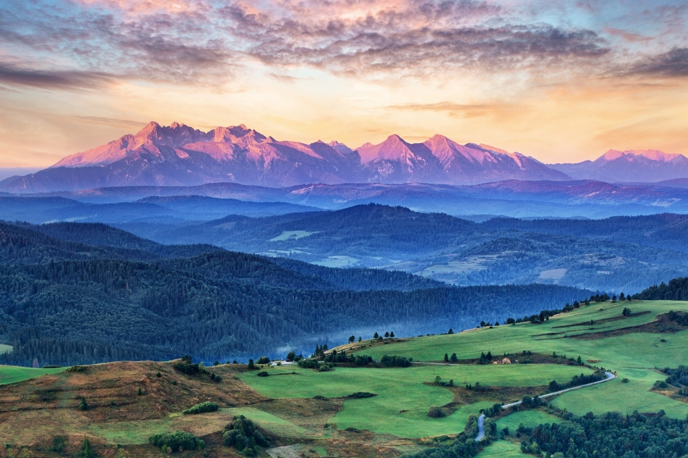

Na tej stronie zobaczysz najpiękniejsze i najciekawsze miejsca na globie
| Nazwa miejsca | Lokalizacja | Opis |
|---|---|---|
| Wieża Eiffla | Paryż, Francja | Ikoniczna wieża z żelaza. |
| Wielki Mur Chiński | Chiny | Starożytna seria murów i fortyfikacji. |
| Wielki Kanion | Arizona, USA | Ogromny kanion wykuty przez rzekę Kolorado. |
| Taj Mahal | Agra, Indie | Oszałamiający mauzoleum z białego marmuru. |